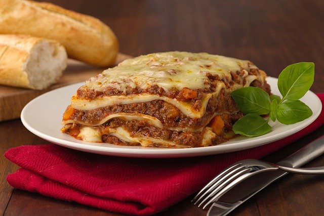

Lasagna

Yummi Lasagna
This yummi Lasagna is full of the best ingredients. It should take a little more than an hour to make, but the result will not disappoint you!
Ingredients
- 2 kg chopped tomatoes
- 1 kg minced meat
- 1 onion
- 1 celery
- 2 - 4 carrots
- 2 garlic cloves
- 400 mL milk
- tomato paste
- red or white wine
- olive oil
- 70 g Butter
- 70 g flour
- Salt, Pepper, Paprika powder, Oregano, powdered nutmeg
- Lasagna noodles
- parmesan, shredded cheese
Instructions
-
Begin by finly chopping youe onion, the celery and carrots. Heat under medium a big enough pot and cook it.
When it starts to brown your mirepoix is ready and can be taken out of your cooking pot. Add then your minced meat and sear it
and add at the end some tomato paste and your minced garlic to roast it a little bit (be carefull to not burn it!).
When done deglace it with your choice of wine and add back your mirepoix and add the copped tomatoes. Add salt, pepper, paprika powder
and oregano to taste. Let it simmer over medium heat for 20 to 30 minutes.
-
In a second pot start to prepare your sauce béchamel. Start by adding over medium heat your butter and melt it. Combine it with your flour
and mix it into a paste. Into the pot add then your milk and stir thoroughly. After a while it starts to thicken. Add then salt, pepper
and nutmeg to taste (be carefull to not add too much nutmeg).
-
When all of it is done start by constructing your lasagna. Start by making a thin layer with your sauce bolognese. Add a layer of noodeles,
put on top of it again your sauce bolognese and then some of your sauce béchamel. Top this off again with a layer. Repeat these steps until
you have no sauce bolognese left and still some béchamel. Put onto of your last layer of noodles the remaining sauce béchamel and finish with
shredded parmesan and e.g. shredded gouda.
-
Put your lasagna now into a preheated oven (200 °C). It should be in there for roughly 20 min or until the cheese ontop starts to brown.
When finished take it out of the oven and let it sit for 10 minutes before serving.